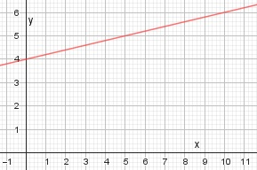

Lineare Funktionen Aufgabe 20 Ermitteln Sie die Funktionsgleichung der dargestellten Geraden.  2 Punktkoordinaten abgelesen: A (10|6) x1 y1 B (0|4) x2 y2 y2 - y1 4 - 6 -2 m = -------- = ---------- = ---- = 0,2 x2 - x1 0 - 10 -10 b = 4 am Punkt B abgelesen y = 0,2x + 4